Materi Konversi Bilangan Komputer
Definisi Konversi Bilangan Dan Jenis Sistem Bilangan
Konversi Bilangan adalah proses mengubah bentuk bilangan dari satu bentuk ke bentuk bilangan lain yang memiliki nilai sama. Ini akan digunakan dalam sistem bilangan komputer. Sistem bilangan digunakan untuk menentukan representasi suatu angka dengan simbol-simbol yang telah disepakati. Ini melibatkan serangkaian pesan simbol yang mewakili angka, dengan batasan tertentu untuk operasi aritmatika seperti penjumlahan, perkalian, dan operasi aritmatika lainnya.
Sistem bilangan juga menjadi bagian integral dalam proses penentuan alamat IP. Setiap sistem bilangan memiliki radix atau basis yang berfungsi sebagai nilai referensi. Ada empat sistem bilangan utama: biner, desimal, oktal, dan heksadesimal, masing-masing dengan radix yang berbeda. Berikut adalah tabel yang menyajikan jenis-jenis sistem bilangan beserta radix dan simbol yang digunakan untuk masing-masing sistem bilangan:
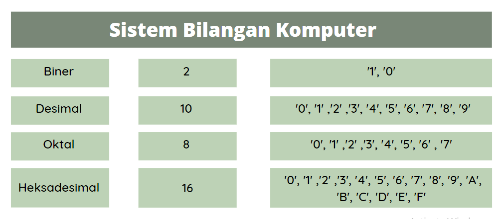-
Bilangan Biner
Dalam sistem bilangan biner, menggunakan 2 simbol, yakni ‘1’ dan ‘0’. Oleh karena itu, biner mempunyai radix 2. Contoh bilangan biner adalah 1100.
-
Bilangan Oktal
Sistem bilangan oktal mempunyai radix 8. jadi simbol yang digunanakan juga 8 yaitu ‘0’, ‘1’ ,’2′ ,’3′, ‘4’, ‘5’, ‘6’ dan ‘7’. Bilangan ini digunakan sebagai alternatif untuk menyederhanakan sistem pengkodean biner. Karena 8=23, sehingga 1 digit oktal dapat mewakili 3 digit biner. Contoh bilangan oktal adalah 476.
-
Bilangan Desimal
Di sistem bilangan desimal, cara menghitung bilangannya dengan menggunakan 10 simbol, yakni ‘0’, ‘1’ ,’2′ ,’3′, ‘4’, ‘5’, ‘6’, ‘7’, ‘8’, dan ‘9’. Bilangan desimal mempunyai radix atau basis 10.
-
Bilangan Heksadesimal
Heksadesimal menggunakan 16 simbol, yakni ‘0’, ‘1’ ,’2′ ,’3′, ‘4’, ‘5’, ‘6’, ‘7’, ‘8’, ‘9’, ‘A’, ‘B’, ‘C’, ‘D’, ‘E’, dan ‘F’. Oleh karena itu heksadesimal mempunyai radix 16. Bilangan heksadesimal juga digunakan untuk alternatif dalam penyederhanaan sistem pengkodean biner. Hal ini dikarenakan 16=24, sehingga 1 digit heksadesimal dapat mewakili 4 digit biner.
Cara Konversi Bilangan
Konversi bilangan bisa dilakukan antara jenis bilangan satu ke bilangan yang lainnya. Di bawah ini ada beberapa cara konversi bilangan yang bisa dilakukan, yaitu:
-
Konversi Bilangan Desimal ke Bilangan Lainnya
Untuk melakukan konversi dari bilangan desimal ke jenis bilangan lainnya, langkah pertama yang perlu dilakukan adalah membagi bilangan desimal tersebut dengan bilangan tujuan. Hasil pembagian dibulatkan ke bawah, dan sisa hasil bagi disimpan. Proses ini diulangi hingga hasil bagi lebih kecil dari bilangan tujuan, dan sisa-sisa hasil bagi diurutkan dari paling akhir hingga paling awal.
-
Konversi Bilangan Desimal Ke Biner
Cara konversi bilangan desimal ke biner adalah dengan membagi bilangan desimal dengan 2 dan menyimpan sisa bagi per seitap pembagian terus hingga hasil baginya lebih kecil dari basis 2. Hasil konversi adalah urutan sisa bagi dari yang paling akhir hingga paling awal.
Contoh:
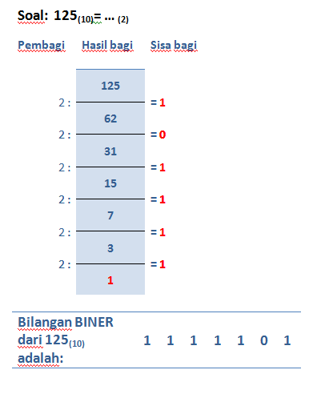 -
Konversi Bilangan Desimal Ke Octal
Cara konversi bilangan desimal ke octal adalah dengan membagi bilangan desimal dengan 8 dan menyimpan sisa bagi per setiap pembagian terus hingga hasil baginya lebih kecil dari 8. Hasil konversi adalah urutan sisa bagi dari yang paling akhir hingga paling awal.
Contoh:
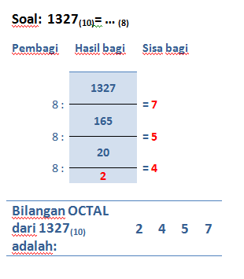 -
Konversi Bilangan Desimal Ke Hexadesimal
Cara konversi bilangan desimal ke octal adalah dengan membagi bilangan desimal dengan 16 dan menyimpan sisa bagi per seitap pembagian terus hingga hasil baginya lebih kecil dari 16. Hasil konversi adalah urutan sisa bagi dari yang paling akhir hingga paling awal. Apabila sisa bagi diatas 9 maka angkanya diubah, untuk nilai 10 angkanya A, nilai 11 angkanya B, nilai 12 angkanya C, nilai 13 angkanya D, nilai 14 angkanya E, nilai 15 angkanya F.
Contoh:
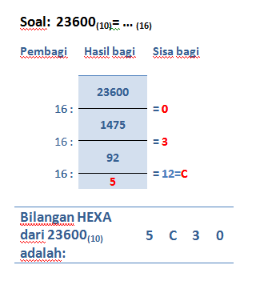
-
Konversi Bilangan Desimal Ke Biner
-
Konversi Bilangan Oktal ke Bilangan Lainnya
-
Konversi Bilangan Octal Ke Desimal
Cara mengkonversi bilangan octal ke desimal adalah dengan mengalikan satu-satu bilangan dengan 8 (basis octal) pangkat 0 atau 1 atau 2 dst dimulai dari bilangan paling kanan. Kemudian hasilnya dijumlahkan. Contoh:
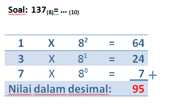 -
Konversi Bilangan Octal Ke Biner
Konversi bilangan octal ke biner caranya dengan memecah bilangan octal tersebut persatuan bilangan kemudian masing-masing diubah kebentuk biner tiga angka. Maksudnya misalkan kita mengkonversi nilai 2 binernya bukan 10 melainkan 010. Setelah itu hasil seluruhnya diurutkan kembali.
Contoh:

-
Konversi Bilangan Octal Ke Hexadesimal
Teknik mengonversi bilangan octal ke hexadesimal adalah dengan mengubah bilangan octal menjadi biner kemudian mengubah binernya menjadi hexa. Ringkasnya octal->biner->hexa.
Contoh:
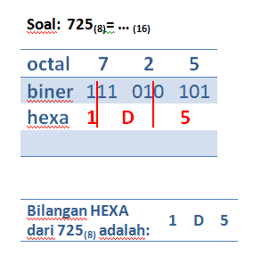
-
Konversi Bilangan Octal Ke Desimal
-
Konversi Bilangan Hexadesimal ke Bilangan Lainnya
-
Konversi Bilangan Hexadesimal Ke Desimal
Cara mengkonversi bilangan biner ke desimal adalah dengan mengalikan satu-satu bilangan dengan 16 (basis hexa) pangkat 0 atau 1 atau 2 dst dimulai dari bilangan paling kanan. Kemudian hasilnya dijumlahkan.
Contoh:
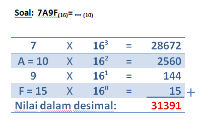 -
Konversi Bilangan Hexadesimal Ke Biner
Sama dengan cara konversi bilanga octal ke biner, bedanya kalau bilangan octal binernya harus 3 buah, bilangan desimal binernya 4 buah. Misal kita konversi 2 hexa menjadi biner hasilnya bukan 10 melainkan 0010.
Contoh:
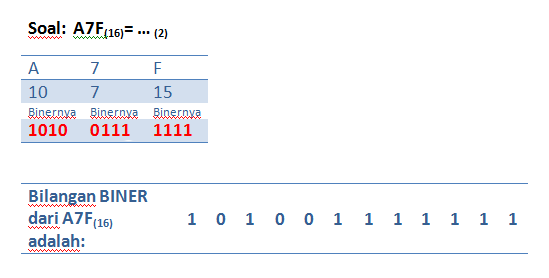 -
Konversi Bilangan Hexadesimal Ke Octal
Begitu juga dengan konversi hexa desimal ke octal yakni dengan mengubah bilangan hexa ke biner kemudian diubah menjadi bilangan octal. Ringkasnya hexa->biner->octal.
Contoh:
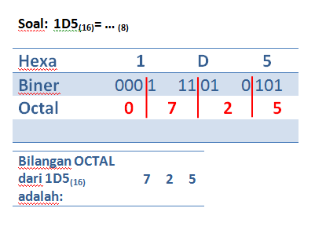
-
Konversi Bilangan Hexadesimal Ke Desimal
-
Konversi Bilangan Biner ke Bilangan Lainnya
-
Konversi Bilangan Biner Ke Desimal
Cara mengkonversi bilangan biner ke desimal adalah dengan mengalikan satu-satu bilangan dengan 2 (basis biner) pangkat 0 atau 1 atau 2 dst dimulai dari bilangan paling kanan. Kemudian hasilnya dijumlahkan.
Contoh:

-
Konversi Bilangan Biner Ke Octal
Konversi bilangan biner ke octal sebaliknya yakni dengan mengelompokkan angka biner menjadi tiga-tiga dimulai dari sebelah kanan kemudian masing-masing kelompok dikonversikan kedalam angka desimal dan hasilnya diurutkan.
Contoh :
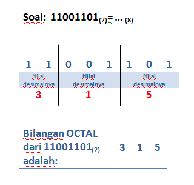 -
Konversi Bilangan Biner Ke Hexadesimal
Teknik yang sama pada konversi biner ke octal. Hanya saja pengelompokan binernya bukan tiga-tiga sebagaimana pada bilangan octal melainkan harus empat-empat.
Contoh:
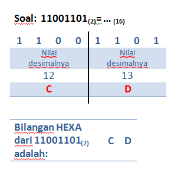
-
Konversi Bilangan Biner Ke Desimal